Agility
Runs a rooftop course lap after lap and picks up marks of grace. If you fall, it walks back.
Draynor, Al Kharid, Varrock, Canifis, Falador, Seers', Pollnivneach, Rellekka, Ardougne, Gnome Stronghold, Barbarian Outpost. Start at the course.
Every bot starts the same way: open the  CS4452 Bots
panel, pick the bot, stand where it says, press Start. ` ~ pauses. One at a time.
CS4452 Bots
panel, pick the bot, stand where it says, press Start. ` ~ pauses. One at a time.
Runs a rooftop course lap after lap and picks up marks of grace. If you fall, it walks back.
Draynor, Al Kharid, Varrock, Canifis, Falador, Seers', Pollnivneach, Rellekka, Ardougne, Gnome Stronghold, Barbarian Outpost. Start at the course.
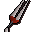
Laps of the Canifis werewolf course: hands the stick back, eats, keeps energy up, banks when it runs out.
Pick your food and how much to take.
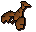
Finds the spots, fishes, then banks or drops the catch and comes back.
Pick the kind: small net, bait, lure, cage, harpoon, big net, karambwan or barbarian. Bring the tool and bait. Has Set start point.
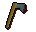
Chops the trees you tick, then banks or drops the logs.
Normal to magic. Has Set start point.
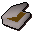
Lights logs next to a bank on a clear tile, keeps the fire going, banks for more.
Stand at a bank with logs in it. Can stop after so many logs.
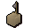
Lays box traps, bird snares, nets, deadfalls or magic boxes, resets them, picks up any that fall, and drops or releases the catch.
Stand in the area with the traps in your bag. Can catch butterflies on the side.
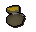
Pickpockets people or steals from stalls, eats when hurt, opens coin pouches, wears dodgy necklaces, and banks or drops the loot.
Stand by the target with food.
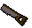
Takes contracts, goes to the house, builds and repairs everything, banks when short on planks.
Pick the tier and how it travels.
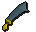
Fights the monsters you name, eats, loots what you list, buries bones, and banks for more food.
Stand where they are. Has Set start point.
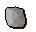
Attacks the Gemstone Crab and follows it through the caves when it burrows. Stays logged in.
Stand by the crab with food.
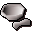
Any job done a bag at a time at a bank: herbs, potions, cutting, fletching, smelting, burying bones.
Pick a recipe; its own panel holds the list, and you start with ours.
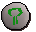
High or low alchemy, or enchanting jewellery, on a bag of items; restocks from the bank.
Name the item. An elemental staff saves its runes.
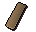
Takes logs to the sawmill and brings planks back, with exactly the coins each trip costs.
Logs and coins in the bank. Can use teleports.
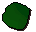
Takes hides to the tanner and brings leather back, coins counted per trip.
Hides and coins in the bank. Can use teleports.
Not bots: they don't play, they help, and can stay on.
Save what you wear and carry as a preset; at any bank, one key puts it all back.
It clicks for you, so it counts like a bot.
Every wiki money-making method, priced live and ranked, in its own panel.
Try on gear and recolour your outfit. Only you see it.
Breaks every so often, logs you back in, keeps you updated and sends the logs. Leave them on.